Normal Wright workspace and actual isolated engineering run. No mocked routes or physical action.
Status: pass
Entered the normal authenticated workspace.
Expected: The workspace loads and offers Workflows.
Actual: Normal workspace and Workflows control visible.
raw 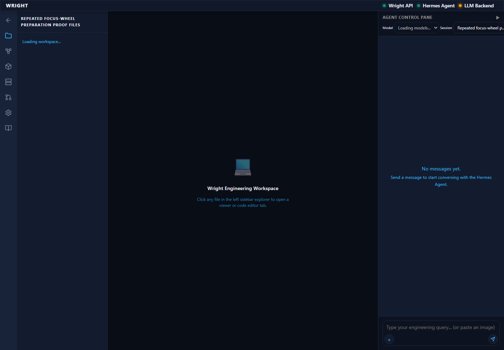
annotated 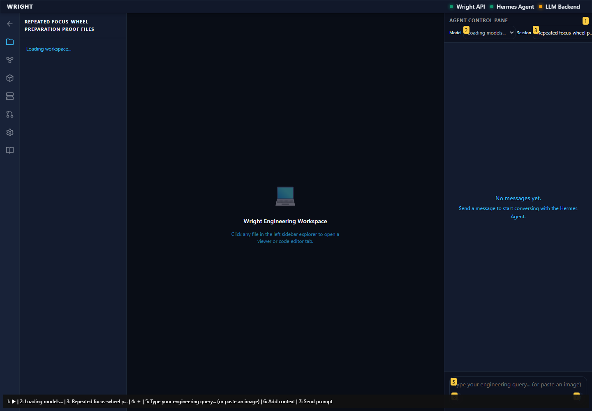
The established workflow editor is available inside the workspace.
Expected: Editor and working-view action appear.
Actual: Editor and working-view action visible.
raw 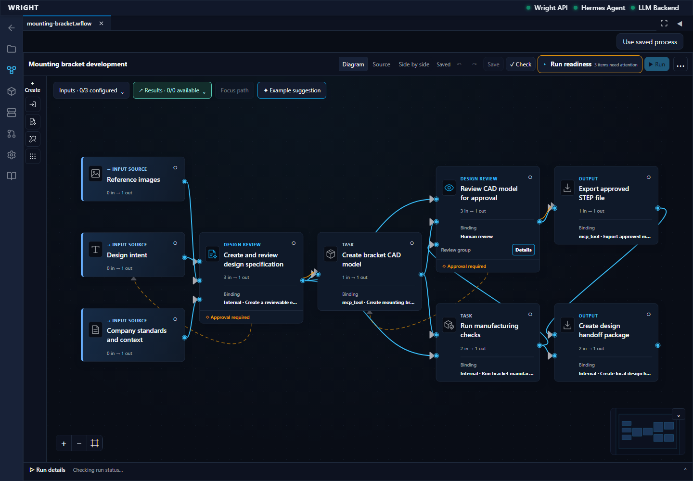
annotated 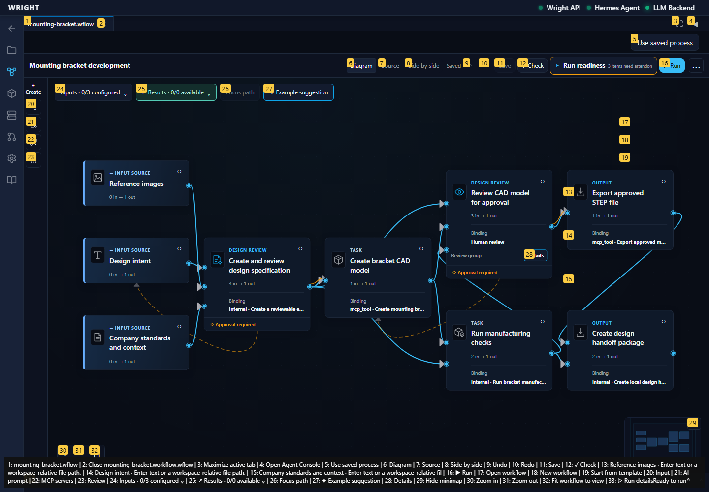
The workspace offers named saved workflows.
Expected: Open workflow is offered.
Actual: Existing file actions are visible.
raw 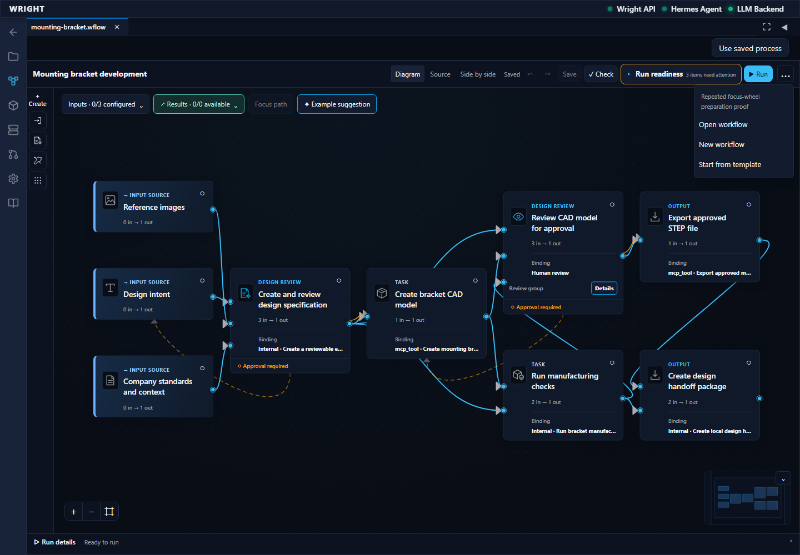
annotated 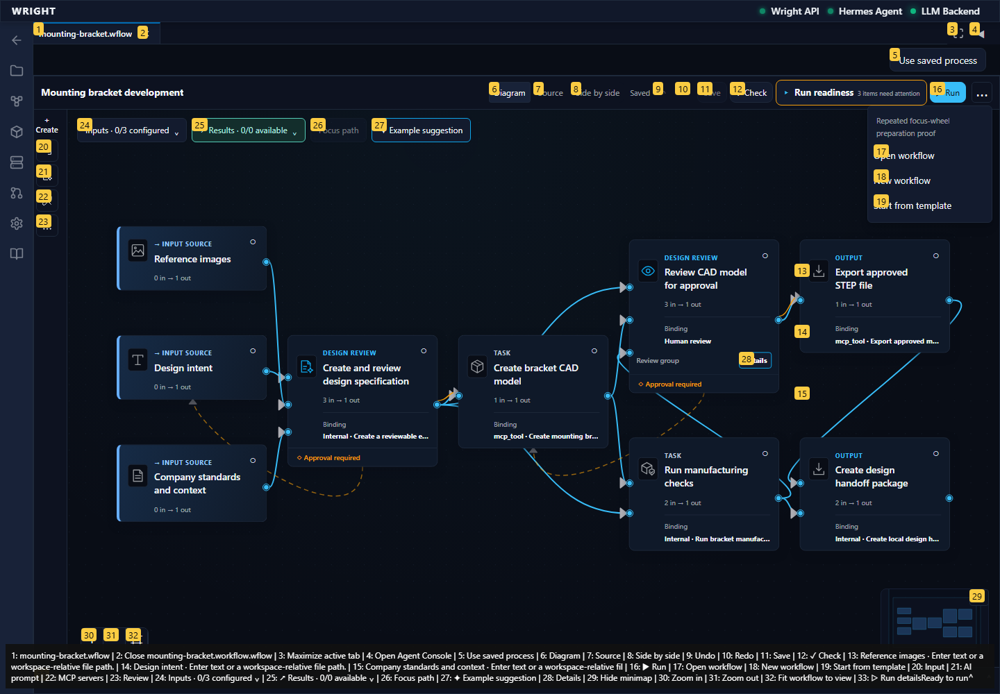
The exact accepted focus-wheel workflow appears in the saved files.
Expected: The accepted focus-wheel workflow is listed.
Actual: Exact accepted workflow choice visible.
raw 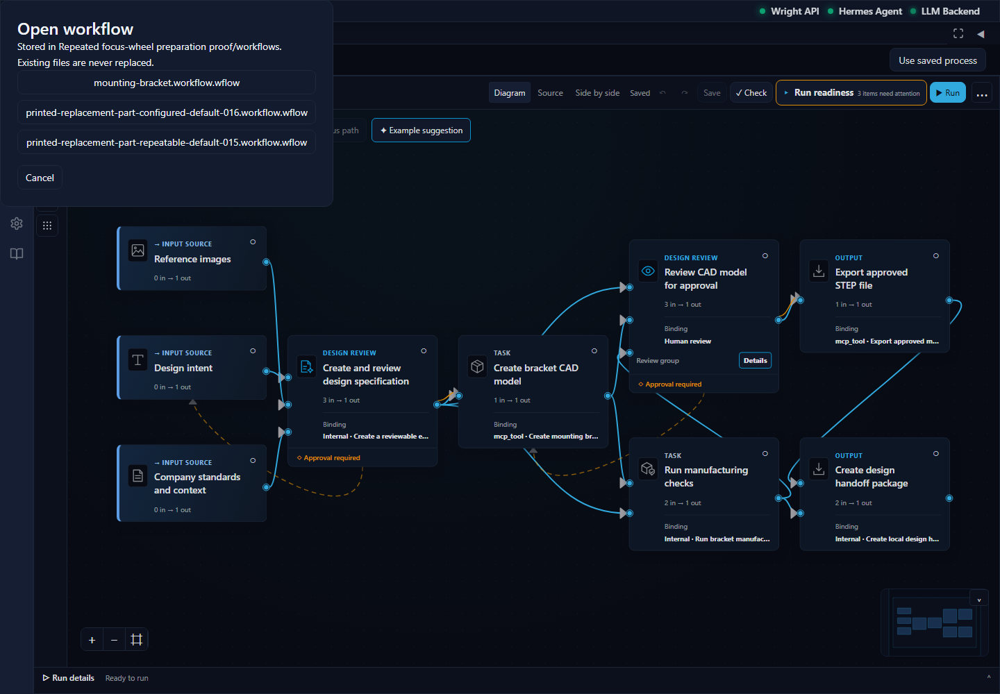
annotated 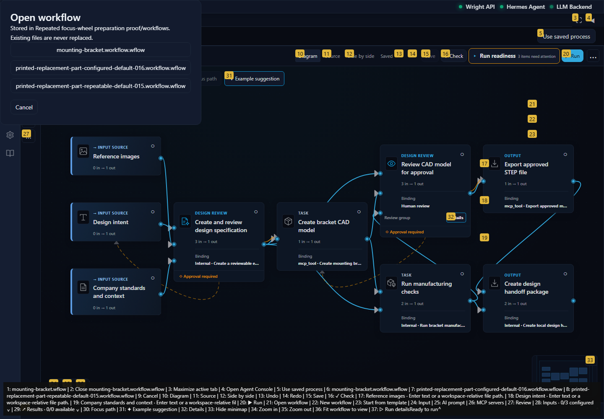
The original focus-wheel assignment opens with its connected review, geometry and slicing stages.
Expected: Accepted heat diagram and working view action available.
Actual: Exact saved focus-wheel source is open.
raw 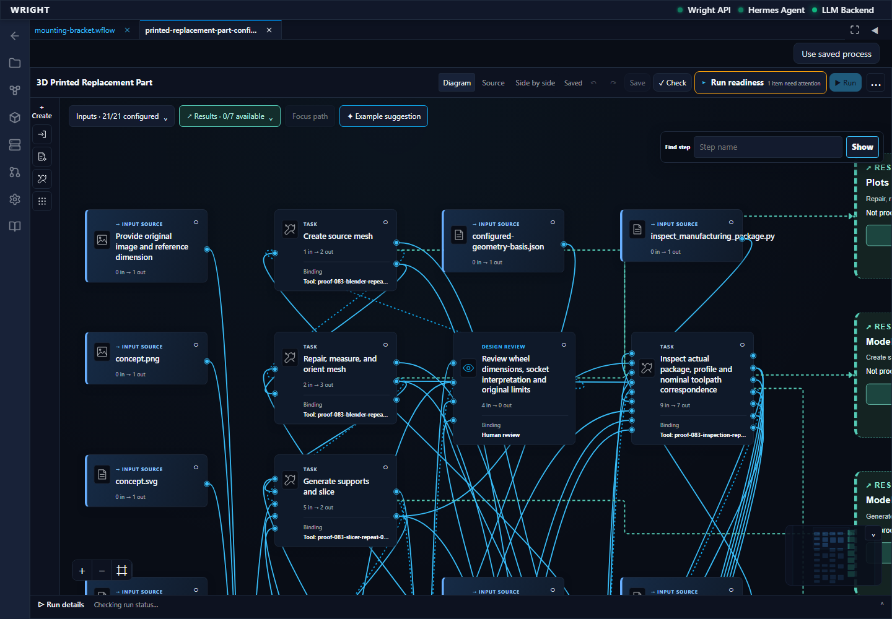
annotated 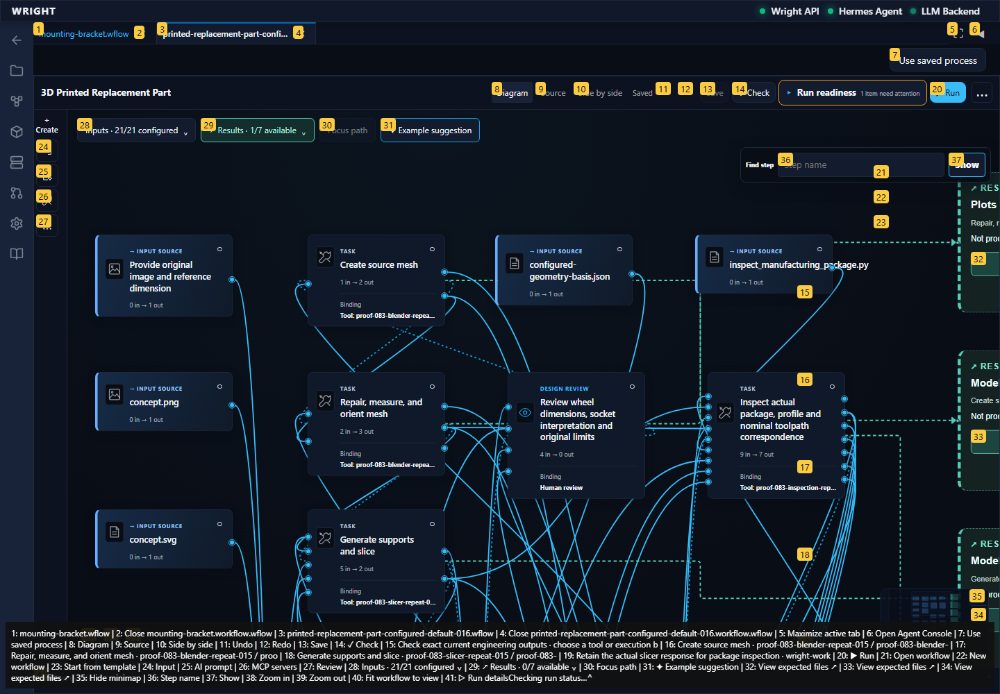
The process working interface opens in another Wright workspace tab.
Expected: Common working view in a workspace tab.
Actual: Common working view visible.
annotated 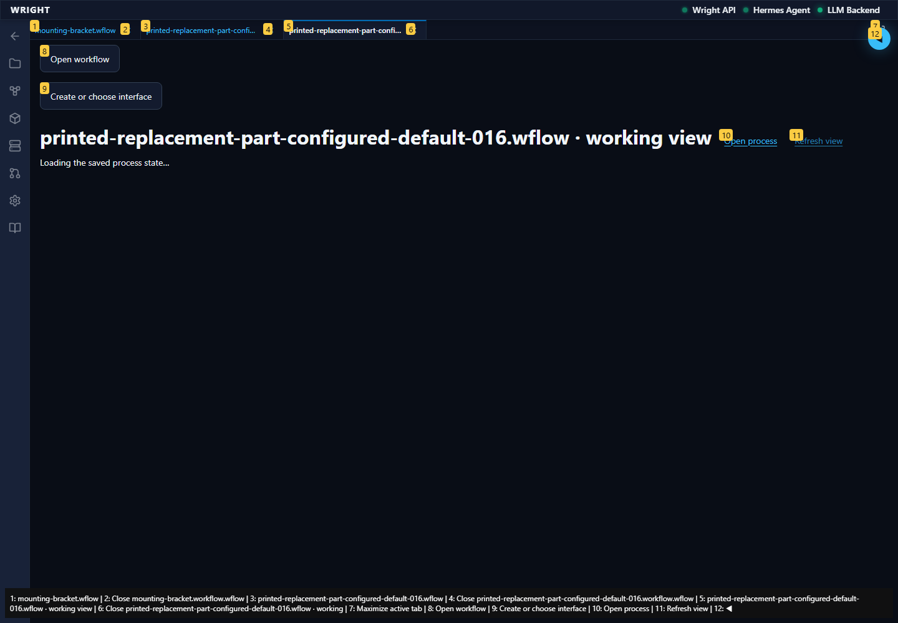
The working view reads the same isolated backend run.
Expected: The common working view attaches without starting another run.
Actual: Existing focus-wheel run attached.
The common view shows only the second run basis and exact waiting review.
Expected: One second-run result and the declared review.
Actual: Second-run waiting state and exact basis result are visible.
annotated 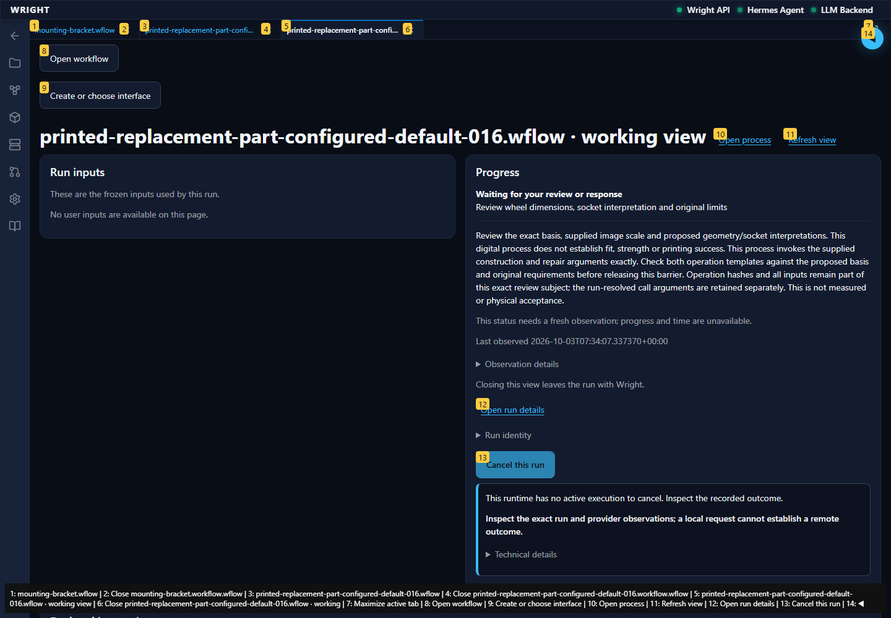
The same built revision follows the second run with its distinct basis result and waiting review.
Expected: The same saved revision displays only second-run state.
Actual: Saved comparison displays the second-run basis and declared review.
annotated 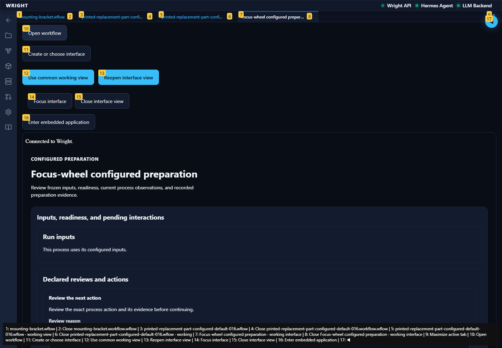
Reload restores the same built UI and pending second-run review.
Expected: No start, model generation, save or review dispatch.
Actual: Same second-run evidence restored with no authoring/execution mutation.
annotated 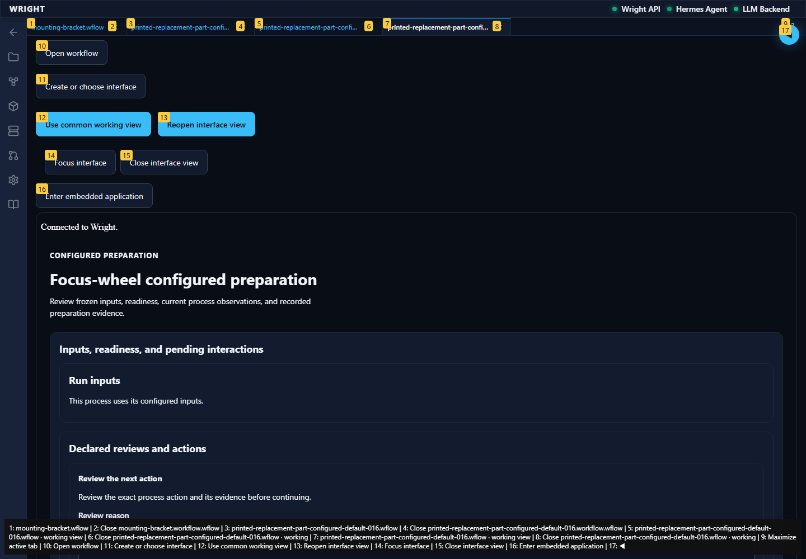